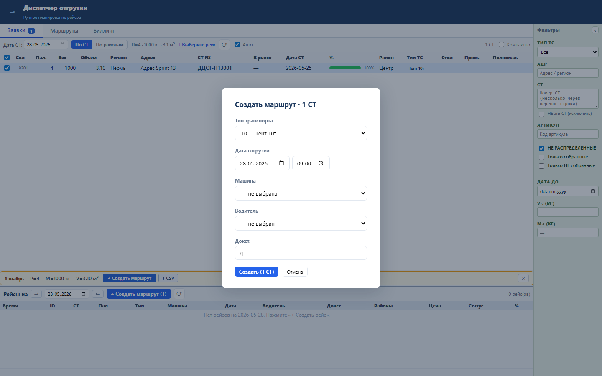
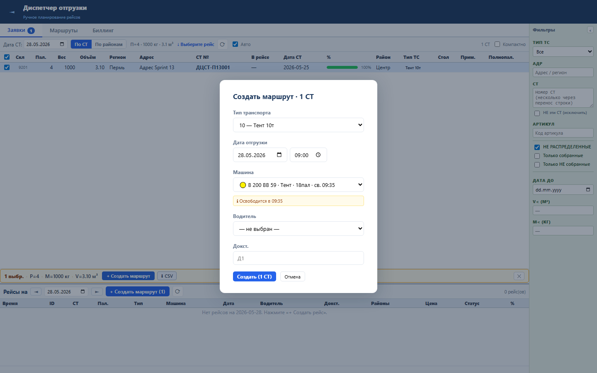

Зачем этот блок
Sprint 13 помогает диспетчеру не назначить рейс на занятую или неподходящую машину. Система показывает свободные, задерживающиеся и конфликтные машины прямо в диалоге создания маршрута.
Вход
Дата/время отгрузки, требуемые паллеты, список машин и их текущий Гант.
Дата/время отгрузки, требуемые паллеты, список машин и их текущий Гант.
Процесс
API считает доступность, UI показывает зеленые/желтые/красные статусы.
API считает доступность, UI показывает зеленые/желтые/красные статусы.
Результат
Диспетчер выбирает свободную машину или видит предупреждение о конфликте.
Диспетчер выбирает свободную машину или видит предупреждение о конфликте.
Структура данных
| Поле | Смысл |
|---|---|
vehicle_num, vehicle_type, marka | Идентификация машины в диалоге. |
max_pallets, gidrobort | Ограничения вместимости и оборудования. |
free_at, delay_min, status, detail | Результат проверки доступности. |
Как работать


Бизнес-процессы
- Создание рейса: выбрать СТ, открыть диалог, получить актуальный список машин.
- Проверка доступности: система сравнивает требуемое время с последним окончанием операций машины.
- Проверка вместимости: если паллет больше вместимости машины, статус становится красным.
- Решение диспетчера: выбрать зеленую машину или осознанно обработать желтый/красный конфликт.
Результат проверки
Sprint 13 закрыт функционально: backend tests 16 passed, UI smoke passed, load NFR passed. Проверены API доступности, plan-fact API, статусы green/yellow/red, предупреждения UI и производительность.